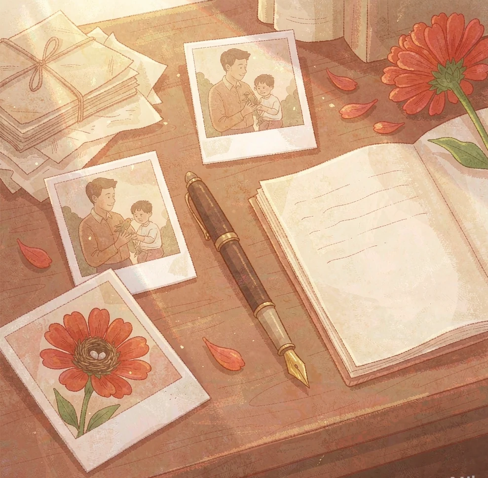
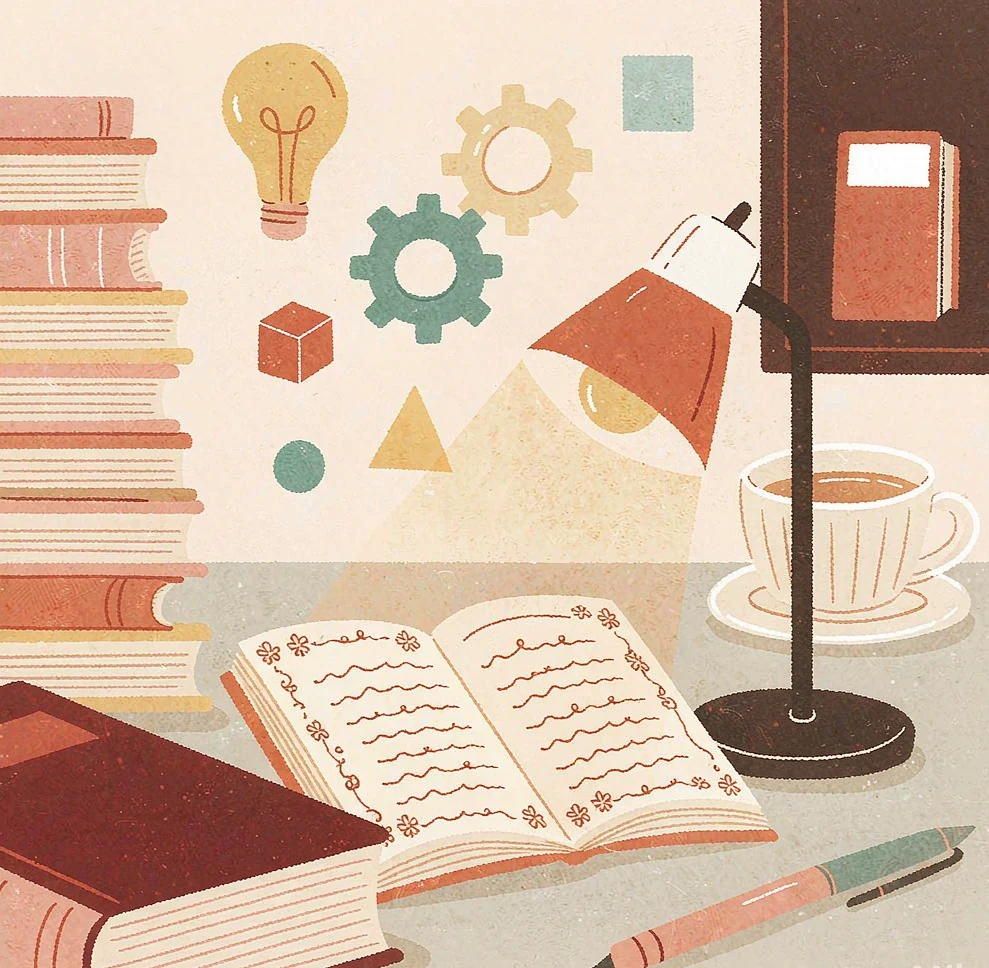
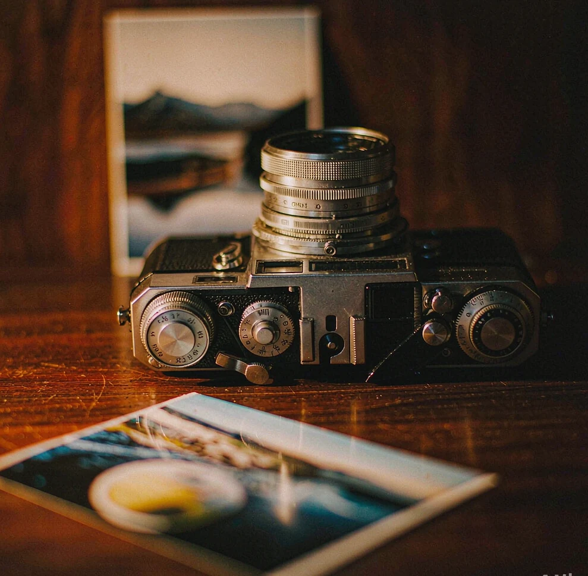
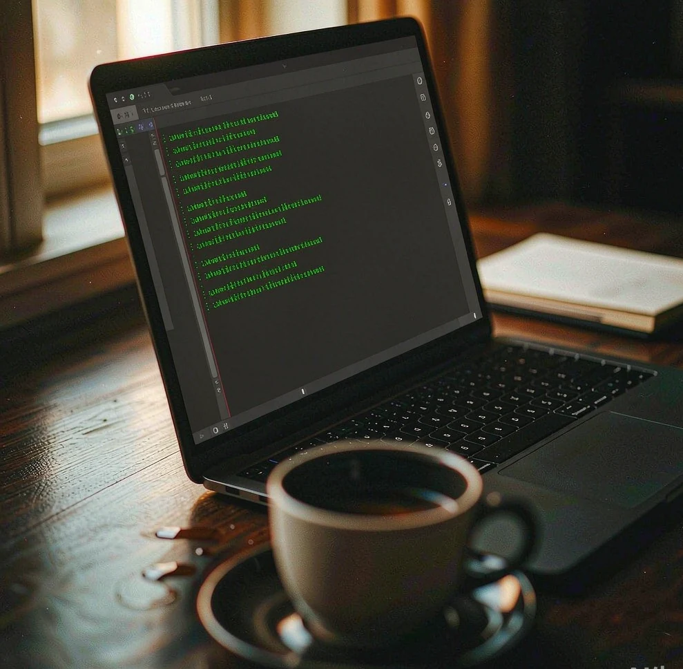

碎碎念、小确幸、偶尔的牢骚——这里是我的云端日记本。一杯咖啡的时间，翻几页我的日常。
写字是我留住时间的方式。这里没有宏大的叙事，只有一些细小的、值得记下来的瞬间——如果你也恰好路过，那就一起坐一会儿。

关于外公的回忆。

学了一堆东西，也踩了不少坑，顺便记下点想法。

新手别急着买镜头，先把光圈快门 ISO 搞明白。
用了一阵大模型，攒了几个真管用的笨办法。

边搭边学，顺便聊聊我对这个框架的感受。
开个头，说说我为什么想自己弄个地方写东西。
一个喜欢拍照、偶尔看书、经常发呆的普通人。这里是我的小小自留地，记录琐碎日常和一闪而过的念头。很高兴你路过我的小世界。